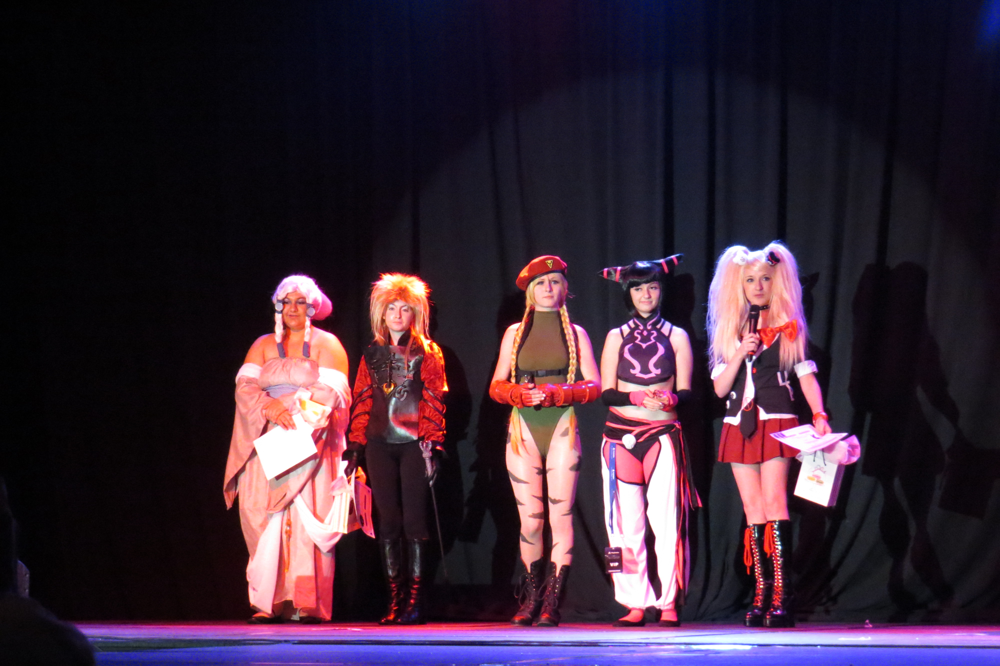
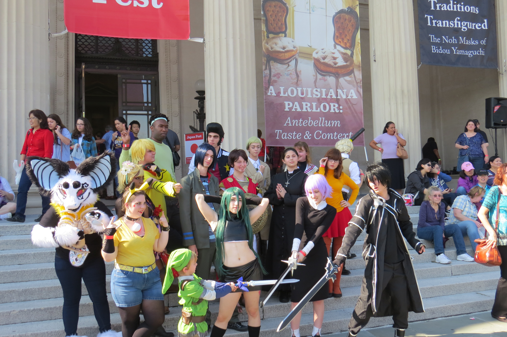
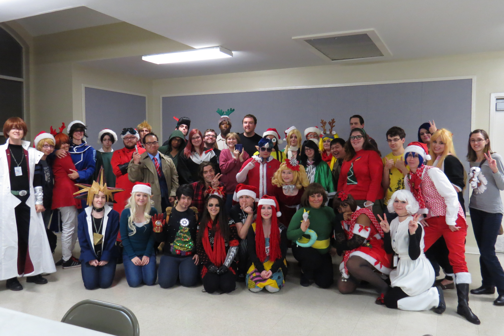

About Us
Louisiana Cosplayers is a group focused on talking about cosplay, helping each other and organizing meet ups in the following cities: New Orleans, Baton Rouge, and Lafayette. Our members actively post in our Facebook Group about their costume progress, asking for help on finding the right character to cosplay or just asking where to find the right kind of fabric.
All cosplayers are welcome here: Anime, Novels, Manga, Video Games, Sci-Fi, Fantasy, Steampunk, etc!
  